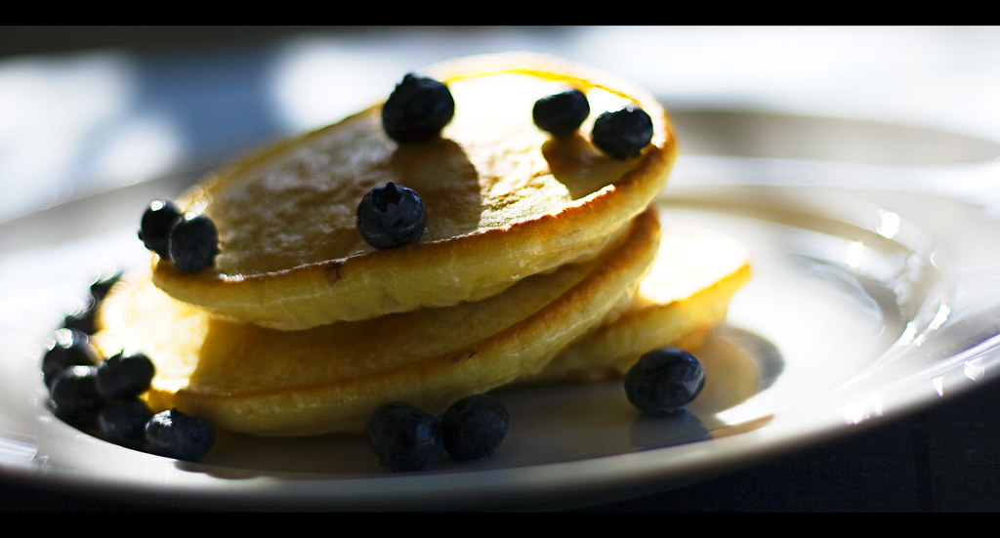
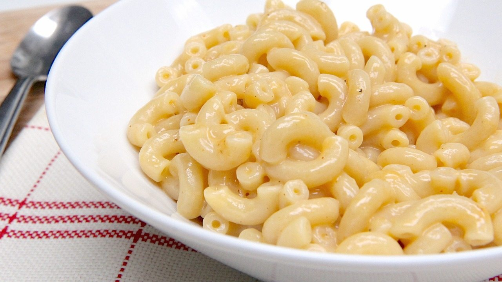

LOGO
Home
Snacks
Meals
Desserts
Login/Register
Welcome to Foody. Here you'll find recipes which requires
only
3 ingredients!
Meals : Breakfast, lunch, dinner

Cottage Cheese Pancakes
Prep Time
3 to 5 minutes
Cook Time
10 to 15 minutes
Ratings

Mac and Cheese
Prep Time
5 minutes
Cook Time
20 minutes
Ratings